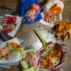

-

-
 多肉入新家
多肉入新家多肉必须经过一段时间适应期，也就是安全度过缓苗期，就说明她入盆成功，真正进入新家了。首先我们需要晾根、修根、再晾根。把刚入手的多肉放在阴凉通风处晾1-2天，这样那些失去生命力的老根、腐根用手轻轻一捋就掉了，根系如果不清理干净，会影响她吸收水肥，也会蔓延到健康根系影响生长。修理干净后在阴凉处再晾1-2天就可以入盆了。
2018-07-15王亚楠198
-

-
 花在冬日
花在冬日初雪悄然而至，洋洋洒洒飘了数日，难得天空放晴，这些花儿最让人心心念念了！冬日的花房比起其他季节并没有逊色，反而多了一丝暖意与新意！鲜花工作室向他人展示的不仅是花卉本身的价值，更多的花艺工作者更愿意把自身对鲜花的理念，对美的追求，对惬意生活的感受与大家分享！
2018-01-08王亚楠234
-
最适合教师节的迷你花束
在诸多的传统节日中，教师节是一个既令人肃然起敬又饱含慈爱深情的节日。自古以来就有“一日为师终身为父”的深刻思想流传，这不仅仅是因为教师这个神圣的岗位为祖国培养了无数栋梁之才，最重要的是作为启蒙者教育后人做人的道理，让一代又一代国人继承着善良、谦和、恭敬等优秀传统品德。所以教师这一职业一直享有“桃李满天下"的美..
2017-09-08王亚楠240
-
 犹如黑天鹅般优雅的到来
犹如黑天鹅般优雅的到来伴着街头偶尔飘落的黄叶，和着萧瑟的凉风划过脸颊的不忍，秋正如镜头中低吟的黑天鹅般优雅的到来，不声不响，悄然而至，很喜欢她的低调、她的优雅。初秋是一个需要被温暖的季节，恰巧有一些可人的花儿就是这样应景般出现。扶郎花，又名非洲菊、太阳花，就是那么恬静柔美的花儿，很符合秋的气质，秋的模样。在市场上常见的扶郎花颜色常以红色、黄..
2017-09-06王亚楠109
-
 那些配材花的点睛之笔
那些配材花的点睛之笔在花艺作品的制作中一般都有三个板块融合穿插而成，她们分工明确而又密切合作，她们承认重点花材不可替代的核心地位，也尊重所谓配材花的衬托力量以及末级中心勾勒轮廓的枝叶。今天我们来欣赏那些配材花的魅力带给我们视觉的享受。市场上常见的配材花有满天星、水晶草、红豆、夕雾草、星辰花、须苞石竹，还有品种繁多的小菊，如孔雀菊（孔雀紫苑..
2017-08-14王亚楠119
-
 适合家庭的摆台花
适合家庭的摆台花经常会有人来咨询哪些花卉适宜家庭摆台花，既能彰显花的婀娜多姿、楚楚动人，又便于养护，上班族回到家中看到闻到这些花儿能缓解疲劳，带来享受的乐趣。小编在养花的过程中愿意和花友们分享一点建议。在众多的鲜切花中，比较适合家庭摆台花的有百合、玫瑰、康乃馨（香石竹）等。百合从颜色上可以分为白百合、粉百合、黄百合，当然她们每种颜色还..
2017-07-16王亚楠216